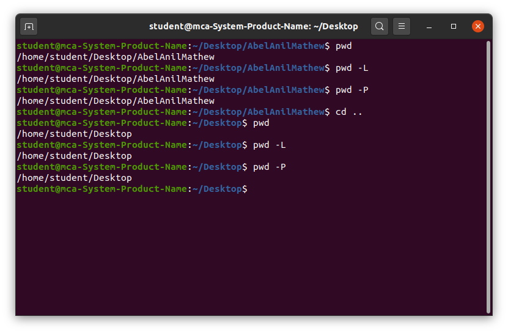

pwd
The pwd (print working directory) command displays the absolute path of the current working directory. It is a simple but essential command for orientation within the filesystem.
Purpose and Functionality
- Print the current working directory.
- Show the full directory path from the root (/).
- Confirm the current working directory when navigating.
- Displays Absolute Path: Outputs the complete path of the current directory.
- Assists in Navigation: Useful for verifying location in complex directory structures.
